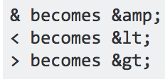

NotUber Security Assessment
Introduction
Please note: The code of the original partner assigned to returned Application Errors. For this report, I analyzed Mings Chow's code
Client's product is a web application and database that retrieves and stores a user's username, latitude, and longitude (and denotes whether they are a vehicle or passenger). The location inputted by users is then shown on a google map, and users can also specifically look for users by username, and see all passengers on the site. I was hired to attack the application and find as many security and privacy problems as possible, and also to offer possible solutions to those problems.
Methodology
I began by inspecting the website without looking at the source code, then used curl to test database security.
Abstract of Findings
The main issues found revolve around the client failing to properly check user input. Attackers can easily deliver malicious content to other users by inputting Javascript scripts through the username, which is then stored in the database and subsequently delivered to all users. Attackers can also very easily gain access into the user info database, and can easily obtain other user's information.
Issues Found
Issue: XSS(Cross Site Scripting) Input Validation
- Attacker can easily deliver malicious Javascript that affects other users.
- Location: At the root/home page. Focus: /submit POST API
- Severity: High
- Description: When sending data (username, lat, lng) about a user using the POST method (/submit) through curl, client does not check for unwanted characters, and so stores malicious content in mongoDB databse, which can be delivered to other users (see Output Validation Issue below). Sample picture below: script sent in POST parameters that will cause alert box to pop up for any user that accesses home page.
curl --data "username=&lat=30&lng=30" insertnameofsite/submit

- Resolution: This can be resolved by properly sanitizing POST parameters (user input). To prevent malicious scripts from executing, remove special characters from user input. So for example:

Issue: Output Validation
- Malicious code already present in database is served to client through GET request
- Location: At root/home page. Focus: /GET API
- Severity: Medium
- Description: When contents of passenger database is outputted, there is no output validation. This issue is similar to the above issue found with Input Validation when taking in potentially malicious user input. However, because /GET API does not check for unwanted characters, it delivers malicious content to users from the mongoDB database. This issue is of a lower severity than input validation as fixing the first issue will most likely reduce the likelihood of malicious content being stored in the databse in the first place. However, if attacker is able to gain access an manipulate database data, then output validation is very important. Sample picture below: script retrieved from mongoDB database that causes alert box to pop up for any user that accesses home page.

- Resolution: This can be resolved by properly sanitizing GET parameters before outputting. Similar solution as to above.
Issue: Database Injection (Privacy Issues)
- Attacker can view other users data in MongoDB database
- Location: /vehicle.json GET page
- Severity: High
- Description: /vehicle.json GET API takes in query string parameter to find vehicle potentially associated with inputted username. Does not check if query string parameter is an object or not, so attacker can query mongoDB database and access data of other users in database. Server will only return one vehicle to mongodb query, but attacker was still able to access info of users they did not ask for.
- Sample picture below: mongodb query of username in database "not equal" to empty string: "". URL:
http://localhost:3000/vehicle.json?username[$ne]="" User info of vehicle JANET (which was first vehicle inserted into vehicle collection by tester) is returned.

- Resolution: Since mongoDB queries are objects, this can be resolved by properly checking whether the GET parameter is a string.
if (typeof request.query.username !== 'string') {
//SEND ERROR
return;
}
Conclusion
There are currently a reasonable amount of security and privacy flaws in client's application, most of which stem from incorrectly trusting user input, and potentially putting users' private info at risk. However, most of this can be resolved reasonably easily by inserting a couple of lines of code (written above). In the future, client should be sure to check all user input, and also put in extra precautions to protect database from attackers.
References
XSS Cheat Sheet
Mongo Shell Commands
Hacking MongoDB and Node.js